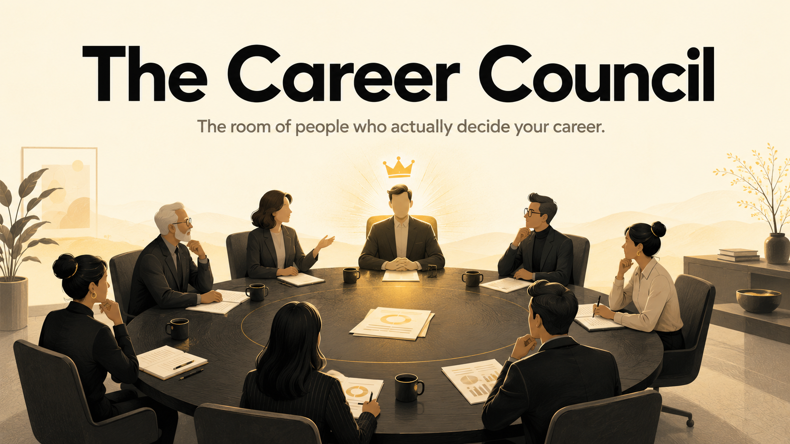

Bring any career decision to a council of the people who actually decide it. A hiring manager, a recruiter, a bar raiser, your past and future selves, and more. They argue it out, and you walk away with a verdict.
I built this from years of work with experienced designers and product people. Today is my son's fourth birthday, so I am giving it to everyone instead of keeping it. Yours to keep, yours to share. Most people run their messiest open decision through it first.
You ask one person about your career and you get one answer, shaped by one seat at the table. This puts every seat in the room at once, lets them disagree, then hands you a single read. None of it is specific to design or to being senior. These seats sit at every table, in every field, at every stage, so run it whether you are two years in or twenty.
Five more join only when they fit the question: the Machine (the screener before the humans), the Executive Sponsor, the Negotiator, the Steelman, and the Home Front, the people who pay for the move and never sat in the interview.
career council this: and the decision you are sitting on. Send.save this as a skill, then click Copy to your skills. After that, just type career council this: in any chat.I built and hosted this one for you, so there is nothing to set up. Open it and bring it a decision.
Open The Career Council GPTThe council is sharp, but it is still a room you run alone. If the verdict lands and you want a second pair of eyes on the real decision, here is where to find me.
A five-minute read on how visible and hireable you actually look right now, and what is quietly holding the level back.
Take the quizBring the decision you keep circling. Ninety minutes, one to one, and you leave knowing what to do.
Book a callMy six-week one-to-one sprint for experienced designers breaking through a career ceiling. Six seats a cohort.
See The Backdoor